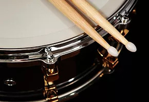

Instruments
Some people prefer one instrument over the other because of how "easy" it is to play or learn. For us at KeyStrings, every instrument has its own characteristics. We can't recommend one instrument for a person who is not interested in learning it. In order to give you an idea on which instrument you would want to learn, we'll be giving you an overview per instrument we are offering.
Guitar
Chords. Sing-a-long. Guitar has been known to be one of the most sought instrument to learn. However, since there are wide references in studying guitar, at KeyStrings we are offering a different approach in learning this instrument. Note reading and other music concepts are taught at an early level. Although chord learning is inevitable in this instrument, you'll also have a deeper understanding on how the instrument is played. And enjoyed too!
Violin
Since KeyStrings started, violin has been the most in-demand instrument in our music center. 60% of KeyStrings Students are enrolled on our violin program. What makes our program unique is that we include the students' goals as a part of our program. Our method of teaching comprises of both Suzuki, Kodaly and Traditional methods. We include sightreading, music theory and different violin playing techniques that will suit the students needs. We also offer Viola & Cello lessons for students who would like to venture on other Bowed String Instrument.

Drums
Coordination. This is they key in achieving good rhythm when playing the drums. Learning this instrument will help you be keen in keeping a steady beat and coordination. Although this instrument may sound loud, but when played together in a band, it will sound as great as others.
Piano
This is the most recommended instrument for all ages. As young as 5 years old, your child can start his/her early music education through learning to play the piano. Our competitive piano teachers will give their full support in reaching your goals as well as incorporating our program for your needs.
Voice
Enhancing your vocal skill will not just help you sing great during karaoke session with friends or singing contests, but it will improve your health as well. At KeyStrings, we assure you quality voice lessons that will let you improve your singing and widen your style and range.

 Instruments
Instruments